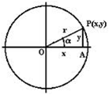
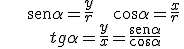
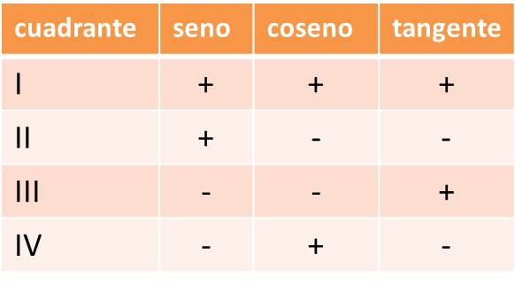
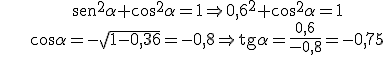

Trigonometría
razones en una circunferencia
Si P(x,y) es el punto de intersección de la circunferencia de radio r y el radio que determina el ángulo, entonces:
 
El signo de las razones en los cuadrantes es:

Propiedades:
• sen2 α + cos2 α = 1, por el Teorema de Pitágoras
• tg2 α + 1 = sec2 α, si dividimos la fórmula anterior por cos2 α
• -1 ≤ senα ≤ 1 -1 ≤ cosα ≤ 1
Con estas propiedades, podemos calcular todas las razones si conocemos una y el cuadrante.
Ejemplo: si sen α = 0,6 y α є II cuadrante, encuentra el resto de razones.

Ejercicios:
1.- Calcula las otras razones de estos ángulos:
a) cosα = 5/13 y α € IV cuadrante
b) tgβ = -3/4 y β € II cuadrante
2.- Comprueba estas identidades:

Soluciones: 1.- a) senα = -12/13, tgα = -12/5; b) senα = 3/5, cosα = -4/5
Obra publicada con Licencia Creative Commons Reconocimiento No comercial Compartir igual 3.0